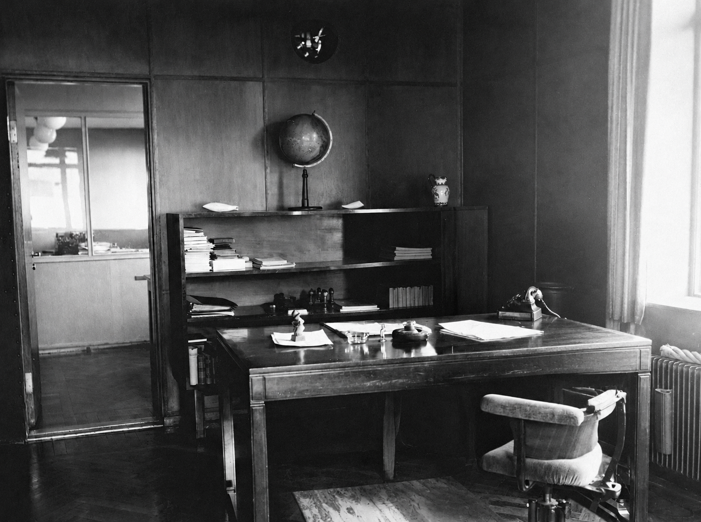

clique para entrar

Por Mauricio Costa
Antes da televisão e muito antes da internet, o rádio foi a primeira voz capaz de chegar a muitos lugares ao mesmo tempo. Uma notícia, uma canção ou um sotaque distante passaram a entrar em qualquer casa, sem que ninguém precisasse sair dela.
No Brasil, as primeiras transmissões públicas aconteceram em 1922, na Exposição do Centenário da Independência. No ano seguinte nasceu a Rádio Sociedade do Rio de Janeiro, de Edgard Roquette-Pinto, com a ideia de levar educação e cultura a quem estivesse ao alcance das ondas.
Do samba às radionovelas, o rádio ajudou a formar identidades e a guardar a memória coletiva de cada época. Hoje, estações do mundo inteiro também transmitem pela internet. Na outra sala, o rádio está pronto para te levar a uma delas.